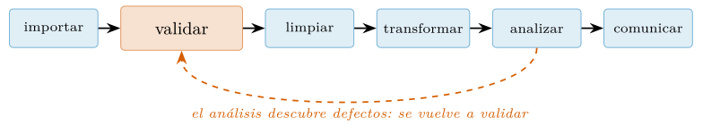
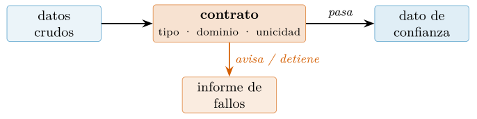
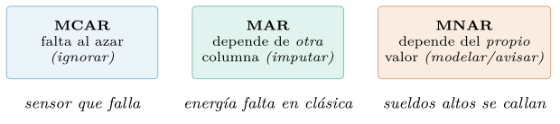
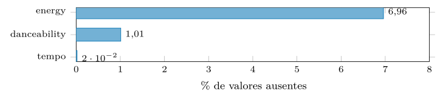
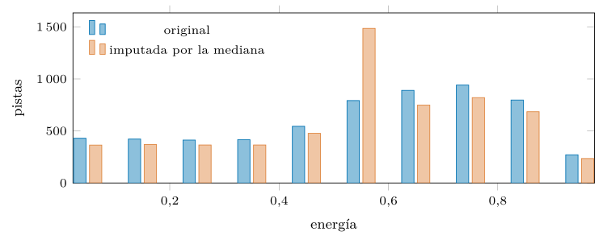
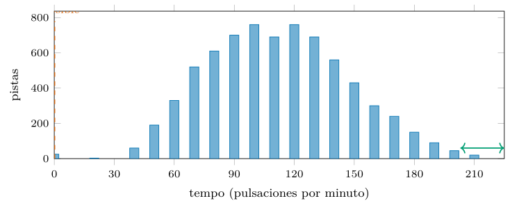
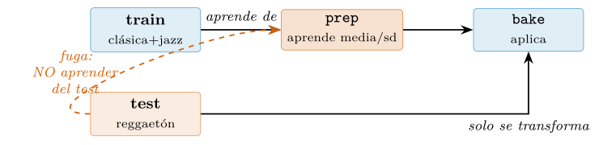

Capítulo 10. El ciclo de trabajo: limpieza, calidad y transformación
▶ Ejecutar este capítulo en Binder
La primera vez que se abre, Binder construye el entorno en la nube (unos 10-20 min); verás una pantalla de progreso. Después queda en caché y abre en segundos. Si parece que no responde, espera a que termine de construirse o vuelve a intentarlo.
Circula por la profesión una cifra redonda: el 80 % del tiempo de quien trabaja con datos se va en prepararlos. Vale la pena rastrear de dónde viene, porque su versión de pasillo esconde un matiz que importa. La fuente primera es el prefacio de Dasu y Johnson (2003), y su afirmación es más fina que la del rumor: preparar y explorar no solo cuestan el grueso del esfuerzo, es que en ese esfuerzo se decide el grueso del valor —la limpieza no es un peaje que se paga para llegar al análisis, es donde el análisis triunfa o naufraga—. Una encuesta posterior recogida por Forbes (Press 2016) puso número al reparto: en torno a un 60 % limpiando y un 19 % recolectando, que suman casi ese 80 % legendario; mediciones más recientes lo sitúan más cerca del 40 %, probablemente porque el instrumental ha mejorado. La cifra exacta, pues, baila; lo que no baila es la conclusión de fondo: preparar los datos se lleva la mayor parte del tiempo y, sobre todo, determina la mayor parte del resultado.
Esa conclusión es la tesis con la que arranca esta parte del libro: preparar los datos no es el paso aburrido que hay que despachar antes del trabajo interesante; es, de pleno derecho, trabajo interesante. Cuándo dos filas son la misma, qué representa un hueco y si se rellena, cuándo un valor es imposible y cuándo solo llamativo: resolver cada una de esas dudas mueve los resultados igual que la elección del modelo posterior —con el agravante de que el modelo figura en la sección de métodos, a la vista de todos, mientras estas resoluciones se quedan calladas en el fondo de un script que nadie relee—. Piénsese en lo que está en juego: una decisión de limpieza puede cambiar la conclusión de un estudio —incluir o no un grupo de valores extremos altera una media, un criterio de duplicados infla o desinfla un recuento— y, sin embargo, mientras el modelo se somete a revisión por pares, esas decisiones rara vez se cuentan. La consecuencia es incómoda: la parte del análisis que más puede torcer el resultado es también la que menos se audita. Este capítulo quiere invertir eso, tratando cada decisión de limpieza con el mismo rigor —declararla, justificarla, hacerla reproducible— que se le exige al método estadístico. Un modelo del montón sobre datos bien preparados todavía se puede salvar; un modelo deslumbrante sobre datos sucios o mal comprendidos es un espejismo que aparenta rigor y no lo tiene.
La escena es familiar para cualquiera que haya trabajado con datos reales. Llega un fichero —un CSV exportado de otro sistema, una descarga de un portal, una hoja que alguien rellenó a mano— y a primera vista parece correcto: se abre, tiene columnas, tiene filas. El análisis avanza sin tropiezos hasta que un resultado imposible —una media negativa donde no puede haberla, un grupo con más miembros que la población— obliga a mirar atrás, y entonces aparecen los fantasmas: la coma que se leyó como punto, el «N/A» que entró como texto, la fila repetida que infló un recuento. Cada uno de esos fantasmas se sembró en la carga y se descubrió tres pasos después, cuando ya había contaminado todo lo intermedio. Este capítulo enseña a cazarlos donde entran —no donde afloran— y, más aún, a dejar constancia de la caza, para que el mismo fantasma no vuelva sin que nadie se entere. El cambio de mentalidad que propone es sencillo de enunciar y difícil de interiorizar: no confiar en los datos hasta haberlos interrogado, y no confiar en la propia limpieza hasta haberla verificado. Desconfianza metódica, no cinismo —los datos suelen estar en su mayoría bien—, pero sí la costumbre de comprobar antes de creer, que es lo que separa un resultado sólido de uno afortunado.
Recogemos, además, un testigo. El cap. 9 descansaba en un lujo que casi no se nota: un catálogo que llega impecable, con tipos correctos y ausentes honradamente marcados. Un dato de verdad casi nunca tiene esa buena educación —el mismo catálogo de Spotify (maharshipandya 2022) arrastra rasgos escritos con coma decimal, nombres de género con erratas y lecturas de tempo que no pueden existir—, y devolverle la compostura, comprobando que la tiene, es una profesión aparte. A ella dedicamos el capítulo. El recorrido: primero el plano —el ciclo entero (§10.1) y la forma ordenada que lo vuelve manejable (§10.2)—; luego el instrumental —el contrato que valida sin que haya que acordarse (§10.3); el trato de los huecos, que arranca con la pregunta de por qué están (§10.4); la repetición, los tipos mal interpretados y los valores extremos (§10.5); y la transformación que amolda el dato a la pregunta sin filtrarle la respuesta (§10.6)—. Y al cierre, la política que este volumen aplica y aquí deja por escrito (§10.9) —medir en vez de proclamar— junto a un caso que degrada aposta una porción del catálogo para devolverla al orden con método (§10.10). Como en todo el libro, ninguna cifra se teclea sin haberla corrido antes en R.
De la pregunta al dato: el ciclo completo
Conviene un mapa antes de bajar a cada técnica. El trabajo con datos no es una línea recta de la carga al informe, sino un ciclo (figura 10.1): se importa, se valida contra lo que se espera, se limpia lo que no cumple, se transforma para la pregunta, se analiza, se comunica —y casi siempre se vuelve atrás, porque el análisis revela un defecto que la validación no anticipó, o la pregunta cambia y pide otra transformación—. Las herramientas de los capítulos anteriores cubren ya varios tramos: leer del disco (cap. 5), la gramática de dplyr para transformar (cap. 8), el motor para la escala (cap. 9). Este capítulo llena el hueco entre importar y analizar —validar y limpiar—, el tramo que más tiempo consume y el que más silenciosamente decide el resultado.
Cada etapa del ciclo tiene, además, su herramienta idiomática en R, y buena parte del capítulo consiste en presentarlas en su sitio: para validar, un contrato con pointblank, validate o assertr; para diagnosticar la ausencia, naniar; para tratarla, simputation; para transformar sin contaminar, recipes. No son bibliotecas sueltas que aprender de memoria, sino piezas que encajan en un mismo relato —el de convertir un fichero de procedencia dudosa en un dato que se puede defender—. Verlas como etapas de un ciclo, y no como una lista de paquetes, es la diferencia entre memorizar funciones y entender un oficio.

Una idea gobierna el ciclo entero: cada etapa deja una huella declarada. La validación deja un informe de qué se comprobó; la limpieza, un registro de qué se reparó y con qué criterio; la transformación, una receta reproducible. Un flujo que no deja huella no es reproducible aunque funcione: el número final existe, pero nadie —ni su propio autor, meses después— sabe de dónde salió. Todo el capítulo empuja hacia esa disciplina, que la última sección eleva a política.
Merece subrayarse un rasgo del ciclo que se pasa por alto: es iterativo, no lineal, y las flechas de vuelta no son un fallo del proceso, son el proceso. La primera validación se escribe con lo que uno cree saber del dato; el análisis descubre un patrón que delata un defecto que la validación no anticipaba —una unidad mal medida, un código que significaba otra cosa—, y eso obliga a volver atrás, refinar el contrato y limpiar de nuevo. Quien espera recorrer el ciclo una sola vez, de la carga al informe, subestima siempre el trabajo; quien lo diseña para iterar —dejando cada etapa reproducible, para poder rehacerla barata cuando la de más abajo enseña algo— lo recorre muchas veces sin sufrir. La reproducibilidad no es solo una virtud para el lector futuro: es lo que hace que el propio ciclo sea asumible, porque convierte cada vuelta atrás en volver a ejecutar un guion, no en rehacer a mano un trabajo perdido.
El reparto del esfuerzo entre las etapas también sorprende a quien empieza. La intuición dice que el análisis y el modelo se llevan el grueso del tiempo; la experiencia, que se lo llevan la validación y la limpieza —el 80 % con el que abrimos—, y que el modelo, una vez los datos son de fiar, suele ser lo rápido. No porque modelar sea trivial, sino porque un modelo sobre datos limpios es un problema acotado, mientras que limpiar es un problema abierto: no hay un «terminado» evidente, cada defecto reparado puede destapar otro, y saber cuándo el dato está suficientemente limpio para la pregunta —ni menos, que contamina; ni más, que malgasta— es un juicio que solo da la práctica. Por eso este tramo del ciclo es el que más distingue al principiante del veterano: no en las herramientas, que son públicas, sino en el criterio de cuándo parar.
Datos ordenados: una estructura para pensar
Antes de validar o limpiar conviene fijar la forma que hace pensable cada etapa. El cap. 8 presentó los datos ordenados (tidy data) como destino del remodelado; aquí los recuperamos como doctrina, porque son el sustrato de todo lo que sigue. La formulación canónica es de Wickham (Wickham 2014) y se resume en tres exigencias: a cada variable le corresponde una columna; a cada observación, una fila; y a cada clase de unidad observada, su propia tabla. Una tabla que las cumple es tidy; una que no, está desordenada (messy), y el mismo artículo cataloga las cinco formas más comunes de estarlo, que conviene reconocer porque cada una tiene su remedio: los encabezados que son valores y no nombres de variable (un año por columna, que se arregla con pivot_longer); varias variables apretadas en una columna (un "pop/rock" que se separa con separate); las variables repartidas entre filas y columnas a la vez; varios tipos de unidad mezclados en una tabla (pistas y artistas juntos, que piden dos tablas y una clave); y un mismo tipo de unidad esparcido por varias tablas (que se unen con los joins del cap. 8). Reconocer cuál de las cinco tiene delante uno es la mitad de ordenar; la otra mitad es aplicar el verbo que la deshace. Casi todo el trabajo de ordenar, en la práctica, es una combinación de pivot_longer, separate y algún join —las herramientas del cap. 8—, guiada por la pregunta de qué es aquí una variable y qué una observación. Esa pregunta no siempre tiene respuesta única: en una tabla de escuchas por mes, ¿es «mes» una variable o son doce variables? Depende del análisis. La forma ordenada correcta es la que pone en columnas las variables de la pregunta que se va a hacer, y por eso ordenar no es un paso mecánico previo, sino una decisión que ya mira hacia el análisis.
La razón de que importe no es estética, es operativa, y conviene entenderla porque gobierna todo el capítulo. Cuando cada variable es una columna, validar es comprobar columnas, limpiar es operar sobre columnas y transformar es derivar columnas de columnas —las tres etapas hablan el mismo idioma, el de la gramática de dplyr—. La forma ordenada es, además, la que esperan todas las herramientas que vamos a usar: pointblank valida por columna, naniar resume la ausencia por columna, recipes transforma por columna. Una tabla desordenada no es que sea fea; es que deja a esas herramientas sin superficie sobre la que agarrar, y obliga a un remodelado previo antes de poder siquiera empezar. Hay en esto una economía de escala del conocimiento: aprender una vez la forma tidy y los dos verbos que llevan a ella (pivot_longer, pivot_wider) desbloquea todo un ecosistema de herramientas que la presuponen —el tidyverse entero, y buena parte de los paquetes de calidad y modelado—. Es la ventaja de una convención compartida: en vez de que cada herramienta invente su formato, todas acuerdan uno, y quien lo domina puede encadenarlas sin traducir entre pasos. El orden, en ese sentido, no es solo una propiedad de una tabla; es el idioma común que hace que las piezas encajen. En una tabla desordenada, en cambio, cada operación exige primero adivinar dónde vive la variable: repartida por varias columnas, escondida en los nombres, mezclada con otra. El orden no es un lujo previo; es lo que hace que las herramientas del capítulo —el contrato que valida por columna, la imputación que trabaja por columna, la receta que transforma por columna— tengan sobre qué operar. Por eso ordenar es la primera limpieza, y las demás la presuponen.
Un ejemplo pequeño fija la idea. Supongamos que las escuchas de tres pistas llegan en la forma en que un humano las tabularía —un año por columna—, que es cómoda de leer pero desordenada: el año, que es una variable, está repartido por los nombres de las columnas. Para trabajar hay que enderezarla:
ancho # pista e2023 e2024 <- desordenado: el ano vive en los nombres
tidy <- ancho |> pivot_longer(starts_with("e"), names_to = "anio",
names_prefix = "e", values_to = "escuchas")
tidy # pista anio escuchas <- ordenado: cada variable, una columnaLa versión ancha tiene tantas columnas como años; la ordenada, siempre tres, crezca lo que crezca el histórico. Y sobre la ordenada, agrupar por año, filtrar por escuchas o validar el rango de anio es inmediato, porque cada cosa es una columna. La desordenada obligaría a nombrar columnas a mano en cada operación —y a reescribir el código cada vez que llega un año nuevo—. Esa fragilidad es el síntoma de que la estructura pelea contra la pregunta en vez de servirla.
Validación de datos: del if suelto al contrato
El cap. 3 enseñó el arte de fallar a tiempo: que la excepción lleve encima su propio diagnóstico y pare la ejecución antes de que un fallo siga adelante haciéndose pasar por resultado. Y el integrador del cap. 5 trajo una primera validación hecha a mano: una función con stopifnot que repasaba las pistas y se plantaba ante un género que no reconocía o un tempo que no podía ser. Sirvió, pero adolece de los males de cualquier if disperso. La regla vive sepultada en código imperativo, y para saber qué se le pide al dato hay que leerse el bucle entero. Depende de que alguien lo invoque, y se para en cuanto tropieza con el primer problema: bueno para cortar el paso, malo para diagnosticar. Y añadir una comprobación nueva es sumar otra rama que mantener.
Lo que propone este capítulo es describir —en lugar de programar— las condiciones que el dato ha de satisfacer. La validación de esquema verifica, automática y a la vista, que cada columna trae el tipo, el rango y las restricciones que afirmamos que trae. Lo que resulta es un contrato de datos (data contract), y aventaja a las comprobaciones sueltas por partida doble (figura 10.2). Por un lado documenta: el contrato es una especificación legible de lo esperado, un pacto que se puede cotejar con quien entrega los datos. Por otro, saca a la luz lo que pasaría inadvertido: el duplicado, la errata de género o el tempo imposible quedan atrapados según cruzan la puerta, y no tres etapas más adelante, cuando ya se ha perdido el rastro de la fila que los trajo. Esta segunda ventaja es la decisiva, y merece un nombre: fallar pronto (fail fast). Un error cazado en la frontera cuesta un vistazo al informe; el mismo error propagándose por el análisis cuesta horas de rastrear hacia atrás desde un resultado imposible hasta la fila que lo causó, deshaciendo cada paso intermedio. La distancia entre donde el error entra y donde aflora es, literalmente, el coste de no validar; el contrato la reduce a cero, poniendo la comprobación exactamente donde el dato cruza al sistema.

Perfilar antes de contratar
Un contrato se escribe sobre lo que se sabe del dato, y ante un fichero ajeno lo primero es averiguarlo. El perfilado (data profiling) recorre la tabla y devuelve un retrato: qué tipo tiene cada columna, en qué rango se mueve, cuántos huecos trae, cuántos valores distintos, cómo se distribuye. En R lo dan skimr::skim() —un resumen compacto por columna— y pointblank::scan_data() —un informe navegable con distribuciones y correlaciones—. El retrato no es el contrato, pero lo dicta: al ver que popularity va de 0 a 100 sin huecos, que track_genre tiene 6 valores y que la clave se repite, uno ya sabe qué reglas escribir. Saltarse el perfilado y contratar a ciegas produce el error clásico —una regla que exige lo que el dato nunca prometió, o que calla lo que de verdad importa—. El orden sano es siempre el mismo: perfilar para entender, contratar para exigir, validar para certificar.
El contrato con pointblank
La herramienta idiomática para validar tablas en R es pointblank (Iannone y Vargas 2025). Su modelo es un agente al que se le encadenan las reglas del contrato —una por invariante— y que luego interroga a los datos y levanta un informe. Volvamos al catálogo y recortemos una porción cómoda de manejar: los seis estilos que reúne el vector GENEROS de abajo, depurados ya de claves naturales repetidas, 5 916 pistas en total. Su contrato cabe en unas líneas:
library(pointblank); library(dplyr)
GENEROS <- c("classical", "hip-hop", "jazz", "pop", "reggaeton", "rock")
agente <- create_agent(tbl = sucio,
actions = action_levels(warn_at = 1, stop_at = 0.05)) |>
col_vals_between(popularity, 0, 100) |> # dominio: 0 a 100
col_vals_gt(tempo, 0) |> # tempo estrictamente positivo
col_vals_in_set(track_genre, GENEROS) |> # genero en el conjunto valido
rows_distinct(vars(track_id, track_genre)) |> # la clave natural es unica
interrogate()Cada col_vals_* declara una expectativa; action_levels fija cuándo avisar (warn_at = 1: un solo fallo ya avisa) y cuándo abortar (stop_at = 0.05: un 5 % de fallos detiene el pipeline). El interrogate() ejecuta el contrato y guarda el veredicto regla por regla. Interrogado sobre un fichero al que hemos sembrado defectos a propósito —lo construimos en el integrador—, el informe los caza todos:
# resumen del agente (n = filas comprobadas, fallos por regla)
#> regla columna n fallos aviso
#> 1 col_vals_between popularity 5941 12 TRUE
#> 2 col_vals_gt tempo 5941 19 TRUE
#> 3 col_vals_in_set track_genre 5941 40 TRUE
#> 4 rows_distinct track_id,track_genre 5941 50 TRUEEl contrato no solo dice «hay errores»: dice cuántos, de qué tipo y en qué columna. Doce popularidades fuera de rango, diecinueve tempos imposibles, cuarenta géneros con errata de caja, cincuenta filas implicadas en duplicados. Ese informe es un diagnóstico accionable, y —esto es lo decisivo— es el mismo objeto que documenta lo que se espera de los datos: el contrato y su verificación son una sola cosa.
pointblank tiene tres registros de uso, y conviene conocerlos. El del agente que acabamos de ver produce un informe visual (get_agent_report()) pensado para que lo lea una persona: una tabla con una fila por regla, en verde lo que pasa y en rojo lo que falla, ideal para un panel de calidad de datos que se revisa a diario. El segundo es la interfaz funcional: las mismas comprobaciones como funciones sueltas —test_col_vals_between() devuelve TRUE/FALSE, expect_col_vals_between() se integra en las pruebas de testthat (cap. 3)—, para blindar los datos dentro de la batería de tests del proyecto. Y el tercero es el perfilado: scan_data() recorre una tabla nueva y genera un informe descriptivo —tipos, rangos, ausentes, distribuciones— que sirve para descubrir el esquema antes de escribirlo. El orden natural de trabajo con un fichero desconocido es: perfilar para entenderlo, escribir el contrato que lo describe, y dejarlo puesto como test que se ejecuta en cada carga.
# interfaz funcional: una comprobacion booleana, para condicionar un flujo
test_col_vals_between(musica, popularity, 0, 100) # TRUE
# integrada en testthat: falla la prueba si el contrato no se cumple
expect_col_vals_in_set(musica, track_genre, GENEROS)Puestos así, los tres registros cubren el ciclo de vida entero de la calidad. El perfilado descubre el esquema una vez; el contrato lo fija; los tests lo vigilan en cada carga. En un flujo que corre sin supervisión —una descarga diaria, un pipeline de producción— pointblank puede además avisar: sus umbrales de acción tienen un tercer nivel, notify_at, que dispara una notificación (un correo, un mensaje) cuando la calidad cae por debajo de lo tolerable sin llegar a abortar. Así, la validación deja de ser un gesto puntual en el desarrollo y se vuelve un centinela permanente: el día que la fuente cambie —un proveedor que empieza a mandar la coma decimal, un sensor que se desajusta— el contrato lo detecta en la primera carga y avisa, en lugar de dejar que el defecto se filtre en silencio durante semanas hasta que un resultado imposible lo delate. Vigilar la calidad de forma continua es, a la larga, más barato que auditarla a mano de vez en cuando.
Otras dos gramáticas: validate y assertr
pointblank no está solo. validate (Loo y Jonge 2024) lleva la idea al extremo declarativo: las reglas son objetos que se guardan, se versionan y se aplican con confront(), separando por completo el qué se exige del cómo se comprueba.
library(validate)
reglas <- validator(
pop_rango = in_range(popularity, min = 0, max = 100),
tempo_pos = tempo > 0,
genero_dom = track_genre %in% GENEROS,
energy_01 = in_range(energy, min = 0, max = 1))
summary(confront(musica, reglas))
#> name items passes fails nNA
#> pop_rango 5916 5916 0 0
#> tempo_pos 5916 5915 0 1 # 1 NA (el tempo cero, ya marcado)
#> genero_dom 5916 5916 0 0
#> energy_01 5916 5916 0 0El informe de confront separa con nitidez tres desenlaces por regla: lo que pasa, lo que falla y lo que es NA —una distinción que importa, porque un NA no es un fallo, es una ausencia que la regla no puede juzgar—. Que la clave sean objetos (validator) y no código significa que las reglas se guardan en un fichero aparte, se versionan con el proyecto y se comparten entre scripts: el contrato deja de vivir en un punto del pipeline y se vuelve un activo del proyecto, como los datos o el modelo.
assertr (Fischetti 2023), en cambio, encaja la validación dentro de una tubería de dplyr, para fallar en el sitio y en el momento: verify() comprueba una condición sobre la tabla entera, assert() una sobre una columna, e insist() una regla estadística (como «ningún valor a más de \(n\) desviaciones»). Si algo no se cumple, la tubería se detiene ahí, con el diagnóstico puesto.
library(assertr)
musica |>
verify(nrow(musica) == 5916) |>
assert(within_bounds(0, 100), popularity) |>
assert(in_set(GENEROS), track_genre) |>
analizar() # solo se ejecuta si las tres verificaciones pasanLos tres estilos comparten la filosofía y difieren en el énfasis (tabla 10.1): pointblank brilla en el informe legible para un humano (ideal para un panel de calidad de datos); validate, en gestionar reglas como un activo versionado; assertr, en blindar una tubería concreta en producción. La elección es de contexto, no de corrección; lo que ninguno de los tres perdona es dejar la expectativa sin declarar.
| Herramienta | Modelo | Brilla en |
|---|---|---|
| pointblank | agente que interroga y levanta un informe | paneles de calidad, informe visual, integración con testthat |
| validate | reglas como objetos que se guardan y versionan | el contrato como activo del proyecto, reutilizable entre scripts |
| assertr | verify/assert/insist dentro de la tubería |
blindar un pipeline concreto, fallar en el sitio |
El contrato sobre el catálogo entero
Hasta aquí hemos trabajado sobre la rebanada de seis géneros, cómoda para ilustrar. Pero el contrato vale precisamente porque escala: el mismo agente, apuntado al catálogo completo —113 999 pistas, 114 géneros—, lo audita de una pasada y revela lo que ninguna inspección a ojo vería a ese tamaño.
create_agent(catalogo, actions = action_levels(warn_at = 1)) |>
col_vals_between(popularity, 0, 100) |> col_vals_between(energy, 0, 1) |>
col_vals_gt(tempo, 0) |> rows_distinct(vars(track_id, track_genre)) |>
interrogate()
#> popularity 0-100 : 0 fallos # el fichero procesado ya la corrigio
#> energy 0-1 : 0 fallos
#> tempo > 0 : 157 fallos # imposibles, todo el catalogo
#> clave unica : 894 fallos # clave (id,genero) repetidaEl catálogo procesado del cap. 5 ya tiene la popularidad y la energía en su dominio —esas reparaciones se hicieron aguas arriba—, pero arrastra todavía 157 tempos cero y 894 filas implicadas en claves duplicadas: los mismos defectos que descubrimos por casualidad en capítulos anteriores, ahora cuantificados por un contrato explícito en lugar de tropezados. Esa es la diferencia entre saber que «hay algún duplicado» y saber que hay exactamente 894 filas afectadas, en qué columna y bajo qué regla. Y como el contrato es el mismo objeto para la rebanada y para el catálogo, escribirlo una vez sirve para los dos: la validación no se rehace al cambiar de tamaño, se reaplica. A la escala del cap. 9, donde el dato no cabe en memoria, la misma lógica se lleva al motor —pointblank valida también tablas de base de datos sin materializarlas—, de modo que un contrato puede vigilar un flujo de millones de filas con el mismo puñado de reglas.
Datos ausentes: por qué faltan antes que cómo rellenar
R trata la ausencia como ciudadana de primera: el NA tipado del cap. 2 (NA_real_, NA_integer_…) no es un valor centinela disfrazado, sino una marca propia que se propaga con honestidad por la aritmética. Esa base evita la primera trampa —confundir el hueco con un cero o con una cadena vacía—, pero no la más importante, que es conceptual: antes de decidir cómo rellenar un hueco hay que preguntarse por qué está.
Los tres mecanismos
Que un valor esté ausente es, en sí mismo, un dato —y a veces uno muy informativo—. La estadística clásica (Rubin 1976; Little y Rubin 2019) distingue tres mecanismos de ausencia, y la distinción no es académica: decide qué tratamiento es legítimo (figura 10.3). MCAR (missing completely at random): el hueco es independiente de todo, un sensor que falla al azar; se puede ignorar sin sesgo, aunque se pierda precisión. MAR (missing at random): el hueco depende de otras variables observadas —la energía falta más en la música clásica—; es imputable usando esas otras columnas. MNAR (missing not at random): el hueco depende del propio valor ausente —los ingresos altos se declaran menos—; ninguna imputación lo arregla sin un modelo del mecanismo, y a menudo la única honradez es informar del sesgo. La pregunta «¿por qué falta?» viene, pues, antes que «¿con qué lo relleno?»: el mecanismo manda sobre el método.
La dificultad práctica es que los tres mecanismos se ven iguales en la tabla —un hueco es un hueco—, y distinguirlos exige razonar sobre cómo se generaron los datos, no solo sobre lo que muestran. Los datos delatan a veces el MAR —cuando la ausencia correlaciona con una columna observada, como veremos—, pero el MNAR es, por definición, indetectable desde dentro: si los sueldos altos se declaran menos, no hay en la tabla ninguna columna que lo revele, porque justamente los valores que lo probarían son los que faltan. Ahí la estadística toca su límite y empieza el conocimiento del dominio: solo saber cómo se recogieron los datos permite sospechar un MNAR. Por eso la ausencia es el frente de la limpieza donde más se paga la ignorancia del contexto y menos ayuda la técnica pura; una imputación impecablemente ejecutada sobre un mecanismo mal diagnosticado produce números peores que el hueco que rellenó.

Detectar con naniar
El paquete naniar (Tierney y Cook 2023) da el instrumental para mirar la ausencia antes de tratarla —y «mirar» es literal: buena parte de naniar son visualizaciones—. vis_miss() pinta la tabla entera con las celdas ausentes resaltadas, de modo que un patrón —columnas que faltan juntas, filas enteras vacías— salta a la vista; gg_miss_upset() muestra qué combinaciones de columnas faltan a la vez, revelando si las ausencias se agrupan (síntoma de un fallo común) o son independientes. Antes de cualquier número, esas figuras orientan el diagnóstico: una mancha vertical delata una columna rota; una banda horizontal, filas que llegaron truncadas. Para el resumen cuantitativo, miss_var_summary() tabula cuánto falta por columna; n_miss() y pct_miss() dan el total. Sobre una copia de la rebanada a la que hemos quitado energía (más en la clásica) y bailabilidad (al azar):
library(naniar)
miss_var_summary(d)
#> variable n_miss pct_miss
#> energy 412 6.96 # el grueso de los huecos
#> danceability 60 1.01
#> tempo 1 0.02
n_miss(d) # 473 celdas ausentes en total (1.6 %)Un vistazo al reparto de la ausencia por columna (figura 10.4) orienta el trabajo: casi todo el hueco está en una variable, y conviene atacarlo ahí antes que dispersar el esfuerzo. Pero el número no dice el mecanismo; la estructura, sí. Cruzar la ausencia con otra columna delata el patrón: la energía no falta al azar, falta ocho veces más en la clásica que en el resto —un MAR de manual—.

miss_var_summary). El 6,96 % de la energía falta —el grueso del problema—, frente a un 1 % de la bailabilidad y una sola celda de tempo. Concentrar el diagnóstico donde está el hueco, en vez de repartirlo, es el primer paso: no todas las columnas merecen el mismo esfuerzo de imputación.d |> group_by(track_genre) |> summarise(pct_NA = 100 * mean(is.na(energy)))
#> classical 26.4 hip-hop 4.2 jazz 2.9 pop 2.9 reggaeton 2.6 rock 4.0naniar formaliza esa intuición con la matriz de sombra (bind_shadow()), que añade por cada columna una gemela _NA que marca si el valor faltaba, de modo que la ausencia se puede analizar como un dato más. Y ahí aparece algo revelador: agrupar por esa sombra muestra que las pistas a las que les falta la energía tienen una popularidad media más baja (18,9 frente a 26,6) —no porque el hueco cause la baja popularidad, sino porque ambos comparten causa: la música clásica, que es donde más falta la energía y menos popularidad hay—.
bind_shadow(d) |> group_by(energy_NA) |>
summarise(pop = mean(popularity), n = n())
#> energy_NA pop n
#> !NA 26.6 5504 # donde SI hay energia, popularidad media 26.6
#> NA 18.9 412 # donde FALTA: la ausencia lleva infoQue la ausencia correlacione con otras variables es la firma del MAR, y tiene una consecuencia práctica que se olvida: borrar las filas con huecos (listwise deletion) no es neutro. Se puede medir el sesgo que introduce:
mean(d$popularity) # 26.09 con toda la muestra
comp <- d[complete.cases(d), ] # la "muestra completa"
mean(comp$popularity) # 26.56 tras borrar las filas con NA
mean(d$track_genre == "classical") # 15.8 % de clasica antes
mean(comp$track_genre == "classical") # 12.5 %: se perdio clasicaBorrar los huecos subió la popularidad media y bajó la proporción de clásica del 15,8 al 12,5 %, porque la energía —y con ella la fila entera— falta más en la clásica. La muestra «completa» ya no representa al catálogo: quedó sesgada hacia lo popular sin que nadie lo decidiera. El borrado por pares (pairwise) —usar cada par de columnas con los casos completos de ese par— conserva más datos pero puede producir una matriz de correlaciones incoherente. Ninguno es gratis: la decisión de descartar es tan analítica como la de imputar. El test de Little (Little y Rubin 2019), mcar_test(), contrasta formalmente la hipótesis de que todo sea MCAR:
mcar_test(select(d, popularity, energy, tempo, danceability))$p.value
#> < 2e-16 -> se rechaza MCAR: la ausencia tiene estructura (es MAR o MNAR)Un \(p\) minúsculo confirma lo que el cruce por género ya mostraba: estos huecos no son azar, y tratarlos como si lo fueran —borrar las filas, o rellenar con la media global— sesgaría el resultado. El test no dice cuál es el mecanismo, solo descarta el más inocente; el juicio sobre MAR frente a MNAR exige, siempre, conocer el dominio.
Imputar, o no, con simputation
Confirmado un MAR, la imputación es legítima —si se hace con cuidado—. simputation (Loo 2024) ofrece una gramática uniforme, impute_método(datos, variable ~ predictores), para todos los métodos. Y aquí acecha la trampa más común: rellenar con la mediana global encoge la varianza, porque sustituye la variabilidad real por un único valor repetido.
library(simputation)
set.seed(7) # mas huecos que los de naniar:
d$energy[sample(nrow(d), 800)] <- NA # 800 MCAR, para que el pico se vea claro
sd(d$energy, na.rm = TRUE) # 0.2585 (varianza real)
sd(impute_median(d, energy ~ 1)$energy) # 0.2408 encoge un 6.8 %
sd(impute_lm(d, energy ~ danceability + loudness + tempo)$energy) # 0.2556
sd(impute_median(d, energy ~ track_genre)$energy) # 0.2538 mediana por grupoLa tabla 10.2 ordena los métodos por lo que conservan. La mediana global es la peor de las tres: aplasta la varianza casi un 7 %, y con ella las correlaciones y los contrastes que vengan después. Imputar por un modelo (impute_lm, que usa las columnas de las que depende el hueco) o, como mínimo, por la mediana de cada género conserva mucho mejor la forma de la distribución, precisamente porque respeta el mecanismo MAR.
| Método | sd resultante | Veredicto |
|---|---|---|
| mediana global | 0,2408 (\(-6{,}8\) %) | aplasta la varianza; evítese |
| mediana por género | 0,2538 (\(-1{,}8\) %) | aceptable; respeta el grupo |
modelo lineal (impute_lm) |
0,2556 (\(-1{,}1\) %) | el mejor; usa el mecanismo |
La lección se generaliza: una imputación buena reproduce la relación que causaba la ausencia; una mala inventa un pico artificial en el centro (figura 10.5).

—dejar el NA y usar métodos que lo respeten, o declarar que esa variable no es utilizable— porque un hueco honesto informa más que un relleno inventado.
Conviene tener claros los casos en que no se debe imputar, porque la tentación de «tener la tabla completa» es fuerte. Si falta demasiado —más de un tercio de una columna—, cualquier relleno es más invención que dato, y suele ser mejor descartar la variable o tratarla como categórica «ausente/presente». Si el mecanismo es MNAR, imputar con lo observado sesga por definición, porque lo que falta es sistemáticamente distinto de lo que se ve. Y si la propia ausencia es informativa —como vimos, que falte la energía delata la música clásica—, borrarla tira una señal; a veces la mejor variable nueva es un indicador binario de «faltaba», que convierte el hueco en un dato explícito. La imputación es una herramienta, no un reflejo: rellenar por defecto, sin diagnóstico, es de los errores que más silenciosamente contaminan un análisis, porque produce una tabla de aspecto impecable sobre la que ya no se ve lo que se inventó.
Un caso merece mención aparte porque tiene reglas propias: la ausencia en series temporales. Cuando falta un valor en una secuencia ordenada por tiempo —una escucha diaria que no se registró—, imputar por la media de toda la serie destruye la tendencia y la estacionalidad que precisamente interesan. Los métodos correctos usan la estructura temporal: arrastrar el último valor observado (last observation carried forward, prudente pero escalonado), interpolar linealmente entre los vecinos (suave, apropiado para magnitudes continuas), o modelar la estacionalidad y rellenar con lo que el patrón predice. La regla se generaliza más allá del tiempo: imputar bien es respetar la estructura que hace informativo al dato —el género en la energía, el orden en la serie—, y por eso no hay un método universal, sino uno adecuado a cada estructura.
Los otros tres frentes: duplicados, tipos y atípicos
Con el contrato y los ausentes cubiertos, quedan tres suciedades cotidianas que todo fichero real arrastra. Comparten un rasgo: ninguna se ve a primera vista. Una tabla con duplicados se abre igual de bien que una sin ellos; una columna leída con el tipo equivocado imprime números de aspecto razonable; un atípico se esconde entre miles de valores normales. Por eso los tres frentes exigen buscar activamente lo que no salta a la vista —contar claves, inspeccionar tipos, mirar las colas— en vez de esperar a que un resultado imposible los delate tres pasos después.
Duplicados
Un duplicado no siempre es una fila idéntica repetida. Los caps. 5 y 8 mostraron que el catálogo completo trae 444 pares con la misma clave natural (track_id, track_genre) —la misma pista listada dos veces—, y que 16 299 identificadores aparecen en más de un género —lo que no es un duplicado, sino una pista clasificada en varios estilos, que hay que preservar—. La distinción es la sutileza central: un duplicado es una repetición de la misma observación; dos filas con el mismo track_id pero distinto género son observaciones distintas de la misma pista. Confundirlos —deduplicar por track_id a secas— borraría información legítima. Por eso la clave natural es el par completo, y la deduplicación, distinct(track_id, track_genre, .keep_all = TRUE), que conserva la primera aparición de cada par, no la fila entera:
full |> count(track_id, track_genre) |> filter(n > 1) |> nrow() # 444 pares
full |> distinct(track_id) |> nrow() # ids unicos
full |> distinct(track_id, track_genre, .keep_all = TRUE) # dedup por la claveEl matiz de .keep_all importa: sin él, distinct sobre las dos columnas clave devolvería solo esas dos, tirando el resto de la fila; con él, conserva la observación completa de la primera aparición.
Y queda una decisión que distinct no toma por uno: cuál de las copias conservar. Por defecto, la primera en aparecer, pero eso rara vez es lo correcto cuando las copias difieren en algo —una tiene la popularidad más reciente, otra un dato ausente que la primera trae completo—. La deduplicación honrada, en esos casos, no es quedarse con una al azar, sino decidir con criterio: ordenar por la columna que marca cuál es la buena (la más reciente, la más completa) antes de distinct, o agregar las copias en una sola fila que combine lo mejor de cada una. Un distinct a ciegas sobre filas que no son idénticas es una elección disfrazada de trámite, y como toda elección de limpieza, merece hacerse a la vista y no por omisión. El duplicado difuso —la misma canción con el título escrito de dos maneras— es más traicionero y exige normalizar antes de comparar. La receta segura es canonizar el texto (minúsculas, espacios colapsados, acentos fuera) y comparar la forma normalizada, no la original:
norm <- function(x) tolower(trimws(gsub("[[:space:]]+", " ", x)))
c("Bohemian Rhapsody", "bohemian rhapsody ") |>
unique() |> length() # 2
c("Bohemian Rhapsody", "bohemian rhapsody ") |>
norm() |> unique() |> length() # 1Dos títulos que un humano ve iguales, y distinct vería distintos, se funden tras normalizar. La cautela es no pasarse: una normalización agresiva —quitar todos los espacios, ignorar la puntuación— puede fundir pistas distintas («Live» y «Live at Wembley»), así que cada regla de canonización es una apuesta que hay que poder justificar. Para el trabajo serio con nombres, janitor da clean_names() —que estandariza los nombres de columna de un fichero ajeno, "Track ID!" \(\to\) track_id— y get_dupes(), que tabula las filas duplicadas por las columnas que se le indiquen; y el emparejamiento por distancia de edición (paquete stringdist) resuelve las erratas de verdad, no solo las de formato. La cadena es la puerta a la que llamamos ahora con los tipos.
Tipos: la puerta de entrada
El tipo de una columna es la primera invariante que se rompe, y casi siempre en la lectura. El caso arquetípico es la coma decimal: un CSV europeo escribe "45,0", y un lector que espera el punto no la entiende.
readr::parse_number("45,0") # 450 -- ¡la lee como cuatrocientos cincuenta!
readr::parse_number("45,0", locale = readr::locale(decimal_mark = ",")) # 45El primer resultado es el peligroso: no falla, miente: interpreta la coma como separador de millares y devuelve 450. Un tempo de 128 se vuelve 1280, una popularidad de 45 se vuelve 450, y el error cruza silencioso todo el análisis. La defensa es declarar la localización al leer (cap. 5) y —de nuevo— validar el dominio después: una popularidad de 450 la caza en el acto el col_vals_between del contrato. Los tipos y el contrato se refuerzan: el tipo correcto evita el error, y la validación lo atrapa cuando el tipo falló.
La coma decimal es solo el caso más frecuente de una familia entera. Las fechas llegan en mil formatos y una lectura ingenua las deja como texto —o, peor, las malinterpreta invirtiendo día y mes—; se leen declarando el formato con lubridate (cap. 8). Los booleanos disfrazados de texto ("sí"/"no", "1"/"0", "true"/"True") exigen un mapeo explícito, no una coerción automática que trate "no" como verdadero por no estar vacío. Y los factores que se leen como texto —o al revés, texto que se convierte en factor sin querer— reabren la trampa del cap. 2 (as.integer de un factor devuelve los códigos, no las etiquetas). La regla común a todos: el tipo se declara al leer, no se adivina, y lo que la lectura no garantice lo verifica el contrato. Un col_is_numeric, un col_is_date o un col_vals_in_set sobre el booleano cierran el frente que la coerción dejó abierto.
El peligro de fondo es que R coacciona en silencio. Sumar un carácter y un número falla ruidosamente, pero muchas operaciones convierten sin avisar, y el resultado es un tipo que no se esperaba propagándose por el análisis. Un vector con un solo valor de texto —un "N/A" en una columna numérica— vuelve toda la columna de tipo carácter al leerla, y a partir de ahí mean() falla o, peor, la coerción posterior mete NA donde había números. La defensa es la del cap. 2: conocer las reglas de coerción, declarar los tipos esperados con col_types al leer, y usar vapply en vez de sapply para que el tipo de retorno sea un contrato y no una sorpresa. El tipo no es un detalle de implementación: es la primera invariante del dato, y la que, rota, corrompe todas las demás.
Valores atípicos
Un atípico (outlier) es un valor lejos del grueso de los datos, pero «lejos» no es «erróneo», y ahí está toda la sutileza. Conviene separar dos preguntas que se confunden. Una es física: ¿es el valor posible? Un tempo de 0 o negativo no es un atípico, es una imposibilidad —una canción no tiene tempo cero—, y se corrige o se marca NA sin discusión. La otra es estadística: dado que es posible, ¿es raro? Y esa se responde con cuidado, porque la media y la desviación típica, las herramientas ingenuas, las distorsionan los propios atípicos que buscan. Los métodos robustos del cap. 7 —la mediana y la desviación absoluta mediana (MAD)— no tienen ese defecto:
t <- musica$tempo[musica$tempo > 0] # solo los posibles
z <- abs(t - median(t)) / mad(t) # z robusto (mediana y MAD)
sum(z > 3.5) # 0 -- ningun atipico estadistico
# regla del rango intercuartilico (IQR), mas laxa:
sum(t < quantile(t,.25) - 1.5*IQR(t) | t > quantile(t,.75) + 1.5*IQR(t)) # 33El contraste es la lección (figura 10.6): el \(z\) robusto no marca ningún tempo como atípico —la distribución es sana entre 36 y 214 pulsaciones—, mientras la regla del IQR señala 33 valores en las colas. Ninguna de las dos «tiene razón»: son umbrales distintos, y ambos son legítimos según lo que cueste un falso positivo. Lo que no es legítimo es borrar los 33 sin mirarlos, porque un tempo de 210 es una canción rapidísima real, no un error. La tentación de «limpiar las colas» automáticamente es fuerte —dan resultados más bonitos, modelos más dóciles— y por eso mismo peligrosa: un atípico posible casi siempre es la parte más informativa de los datos, el caso extremo del que más se aprende, y eliminarlo es tirar la señal para quedarse con el ruido cómodo del centro. El único atípico que se elimina sin dudar es el imposible —el tempo cero—, y ese lo detecta el contrato, no la estadística. Frente al atípico posible, la regla es investigar, no automatizar: casi siempre es un dato verdadero que el modelo tendrá que aprender a acomodar.
Cuando un atípico posible sí conviene atenuar —porque un solo valor extremo domina una media o desestabiliza un modelo—, hay alternativas al borrado que no tiran el dato. La winsorización recorta los valores por encima de un percentil alto (y por debajo de uno bajo) hasta ese umbral, conservando la fila pero limitando su influencia; el filtro de Hampel sustituye por la mediana local los puntos a más de unas cuantas MAD, útil en series temporales. Ambas son decisiones que sesgan —comprimen la cola que podía ser real—, así que se declaran como cualquier otra reparación. La jerarquía de menos a más agresivo: dejarlo y que el modelo lo acomode; usar un método robusto que le dé menos peso; winsorizar; y solo en último extremo, con motivo físico, eliminar. Borrar es la opción que más información destruye, y por eso la que más justificación exige.

Autopsia de un fichero sospechoso
Los tres frentes se combinan en la rutina que conviene tener automatizada para cualquier fichero que llega de fuera. Es una autopsia en cinco cortes, del más barato al más caro, y el orden importa porque cada uno condiciona el siguiente. Uno, la forma: dim(), names() y str() —¿cuántas filas y columnas, qué tipos leyó R?—; aquí se caza la columna numérica que entró como carácter por un "N/A" perdido. Dos, los tipos declarados frente a los reales: ¿la fecha es una fecha o un texto?, ¿el booleano es lógico o son las cadenas "sí"/"no"?; se corrige releyendo con la localización y los tipos explícitos. Tres, los ausentes: miss_var_summary para el reparto y el cruce por otra columna para el mecanismo, antes de decidir qué hacer con ellos. Cuatro, los duplicados: get_dupes sobre la clave natural, distinguiendo la repetición real de la observación múltiple legítima. Cinco, los rangos y las colas: un summary() y el \(z\) robusto por columna numérica delatan lo imposible (tempo cero) y señalan lo raro (las colas) para inspección.
autopsia <- function(df) {
cat("forma:", nrow(df), "x", ncol(df), "\n")
print(sapply(df, class)) # tipos que ley R
print(naniar::miss_var_summary(df)) # ausentes por columna
print(janitor::get_dupes(df)) # duplicados por todas
print(summary(df)) # rangos y colas
}El valor de una rutina así no es que haga algo que no supiéramos hacer a mano, sino que lo hace siempre, en el mismo orden, sin depender de que uno se acuerde de mirar los duplicados el día que tiene prisa. La calidad de datos no se sostiene con diligencia heroica en cada fichero, sino con una rutina barata que se ejecuta por defecto. El resultado de la autopsia es lo que dicta el contrato de la sección anterior: se perfila para saber qué exigir, y se exige para que el próximo fichero no requiera perfilarse a mano de nuevo.
Transformación y creación de variables
Validados y limpios, los datos aún no están listos para el análisis: hay que adaptarlos a la pregunta. Crear una variable derivada (la energía por minuto), recodificar en tramos, normalizar a media cero, convertir un género en columnas indicadoras: son transformaciones. La gramática de dplyr (cap. 8) basta para las puntuales. Pero cuando la transformación va a alimentar un modelo, entra en escena un peligro que exige una herramienta con memoria: la fuga de datos.
recipes: transformar sin contaminar
El paquete recipes (Kuhn y Wickham 2025; Kuhn y Johnson 2019) describe la transformación como una receta: una secuencia de pasos declarados sobre las columnas que primero se prepara (prep, que aprende los parámetros —la media, la desviación, las categorías—) y luego se aplica (bake, que los usa). Es exactamente el patrón fit/transform del transformador del cap. 6, ahora como infraestructura:
library(recipes)
rec <- recipe(popularity ~ energy + danceability + loudness + tempo,
data = train) |>
step_impute_median(all_numeric_predictors()) |> # rellena huecos
step_normalize(all_numeric_predictors()) # a media 0, sd 1
prep_rec <- prep(rec, training = train) # APRENDE del TRAIN
train_x <- bake(prep_rec, new_data = NULL) # aplica al train
test_x <- bake(prep_rec, new_data = test) # aplica al test igualLa clave está en de dónde salen los parámetros. prep los aprende solo del entrenamiento; bake los aplica tal cual al test. Se comprueba mirando las medias: tras normalizar, la energía del train tiene media cero exacta —es de donde se aprendió—, pero la del test no (-0.0047), porque se le aplicaron parámetros ajenos. Ese pequeño desajuste no es un error: es la prueba de que el test no contaminó la preparación.
La receta como objeto
Que la transformación sea un objeto y no una sucesión de líneas sueltas tiene consecuencias que van más allá de la comodidad. Una receta se inspecciona —tidy(rec) lista sus pasos y summary() los roles de cada columna—, se guarda con el modelo para que la preparación viaje con él, y se reaplica idéntica a cualquier dato nuevo. Los roles son la clave de su flexibilidad: cada columna tiene un papel —resultado, predictor, identificador— y los pasos operan sobre roles, no sobre nombres, de modo que step_normalize(all_numeric_predictors()) normaliza los predictores numéricos sin tocar el resultado ni el identificador, aunque uno no sepa de antemano cuáles son. Se puede además declarar que una columna no es ni predictor ni resultado —un track_id que se quiere conservar para trazar, pero no meter en el modelo— con un rol propio (update_role(track_id, new_role = "id")). El contraste con transformar a mano en dplyr es instructivo: la tubería de dplyr hace la transformación, pero no la recuerda; la receta la recuerda, y ese recuerdo —los parámetros aprendidos, congelados— es justo lo que hace posible aplicarla al test, a producción y a cada pliegue de validación sin volver a aprender. La transformación puntual pide dplyr; la que alimenta un modelo pide una receta, precisamente porque necesita memoria.
Esta distinción —transformar frente a recordar cómo se transformó— reaparecerá en los capítulos de modelado, donde la receta se convierte en la primera mitad de un workflow: la pareja receta + modelo que se ajusta, se valida y se despliega como una sola pieza. La ventaja de esa unión es que la preparación y el modelo nunca se separan —no puede ocurrir que el modelo llegue a producción con un preprocesado distinto del que se entrenó, la causa número uno de que un modelo «que funcionaba» falle al desplegarse—. Por eso recipes no es un rincón de la limpieza, sino la bisagra entre este capítulo y los que vienen: es donde la disciplina de preparar datos de confianza se acopla, sin costura, a la de construir modelos de confianza. La misma filosofía —hacer explícito, aprender solo de lo que toca, dejar huella— gobierna las dos mitades.
La fuga de datos
Por qué importa tanto ese detalle es la lección más valiosa del capítulo. La fuga de datos (data leakage) ocurre cuando información que no debería estar disponible al entrenar se cuela en la preparación —y el caso más común, y más silencioso, es normalizar o imputar usando estadísticas calculadas sobre todo el dato, test incluido—. El modelo aprende, sin que nadie lo note, algo del conjunto con el que se supone que se le va a evaluar, y su rendimiento medido sale optimistamente inflado: brilla en la prueba y fracasa en producción.
Cuánto duele depende del desajuste entre entrenamiento y prueba, y con un ejemplo se ve (figura 10.7). Partamos el catálogo de forma desplazada —train con la música tranquila (clásica y jazz, energía media 0,28), test con la enérgica (reggaetón, 0,74)— y normalicemos un punto del test de energía 0,56:
# correcto: media y sd del train (clasica+jazz)
(0.56 - mean(train$energy)) / sd(train$energy) # 1.42 -- alto, y lo es
# fuga: media y sd de TODA la rebanada (los seis generos juntos)
(0.56 - mean(todo$energy)) / sd(todo$energy) # 0.05 -- "del monton"El mismo punto se convierte en 1,42 (correcto: para el mundo del train, 0,56 es energía alta) o en 0,05 (con fuga: parece del montón), según de dónde salgan la media y la desviación. La diferencia —de un valor «alto» a uno «del montón»— cambiaría por completo lo que el modelo aprende de esa pista, y todo por una decisión invisible sobre qué datos entraron en el cálculo de dos números. Un modelo entrenado con la versión fugada ve valores que en producción nunca recibirá, porque en producción no tendrá el test para calcular la media. La gracia de recipes es que hace la fuga estructuralmente imposible en este frente: como prep solo mira el entrenamiento, es literalmente incapaz de usar el test para aprender un parámetro. La disciplina que en el cap. 6 era un patrón que había que recordar —la barrera entre fit y transform— aquí es una garantía de la herramienta.
La fuga tiene una variante más sutil, y más frecuente, que asoma en la validación cruzada. Al partir los datos en varios pliegues para estimar el rendimiento, la tentación es normalizar o imputar una vez, al principio, sobre todo el conjunto, y luego repartir en pliegues. Parece inocente, pero es fuga: cada pliegue de validación ya contribuyó a la media y la desviación con las que se le va a transformar, así que la estimación de rendimiento sale optimista. La forma correcta es meter la receta dentro del bucle de validación cruzada —preparar con el pliegue de entrenamiento, aplicar al de validación, en cada repetición—, que es exactamente lo que un workflow de tidymodels hace por construcción cuando se le pasa la receta junto al modelo. Por eso recipes no es solo comodidad: es lo que hace que la disciplina anti-fuga se cumpla en cada pliegue sin que nadie tenga que acordarse. La diferencia entre un rendimiento honesto y uno inflado no está en el modelo; está en si la preparación respetó la frontera, siempre, en cada partición de los datos.

prep aprende los parámetros solo del entrenamiento; bake los aplica al test sin volver a aprender. La flecha roja tachada es la fuga que la herramienta impide por construcción: el test nunca alimenta el aprendizaje, así que la media y la desviación no pueden contaminarse con datos que en producción no existirán.Variables con el dominio dentro
No toda transformación es estadística; la mejor suele traer conocimiento del dominio. El repertorio de recipes cubre los pasos habituales, cada uno un step_ declarado que prep aprende y bake aplica:
rec <- recipe(popularity ~ ., data = train) |>
step_zv(all_numeric_predictors()) |> # quita varianza cero
step_YeoJohnson(all_numeric_predictors()) |> # corrige asimetria
step_normalize(all_numeric_predictors()) |> # media 0, sd 1
step_corr(all_numeric_predictors(), threshold = 0.9) |> # quita colineales
step_other(track_genre, threshold = 0.05) |> # agrupa raros en "other"
step_dummy(track_genre) # categorias -> indicadorasstep_zv descarta lo que no informa (una columna constante); step_YeoJohnson endereza una distribución sesgada sin exigir que sea positiva (a diferencia del logaritmo); step_corr elimina predictores casi redundantes antes de que confundan al modelo; step_other agrupa las categorías raras en un cajón «other» para que no generen columnas casi vacías; y step_dummy convierte un género en columnas indicadoras (una por categoría menos la de referencia). Todos comparten la misma virtud: sus parámetros —qué columna tiene varianza cero, qué transformación de Yeo-Johnson, qué categorías son «raras»— se aprenden del entrenamiento y se congelan, de modo que el test recibe exactamente el mismo tratamiento aunque, por ejemplo, no contenga todos los géneros. La receta es, además, un objeto: se guarda, se inspecciona (tidy(rec)) y se reutiliza, y encaja como una pieza en un workflow de tidymodels que empareja la receta con el modelo, garantizando que la misma preparación viaja con él a producción. Pero la variable que más vale suele ser la que codifica una idea: no la energía y la acústica por separado, sino su contraste; no el tempo bruto, sino su tramo perceptual (lento, medio, rápido). Un ejemplo lo aterriza. La energía y la acústica son dos columnas medidas; su contraste (energy - acousticness) es una variable de dominio que separa lo eléctrico de lo orgánico en una sola dimensión, y a menudo predice mejor que las dos por separado, porque codifica la idea que de verdad distingue los géneros. Del mismo modo, el tempo bruto importa menos que su tramo perceptual —lento, medio, rápido—, que es como el oído lo agrupa. Ese salto —de la columna medida a la variable que captura lo que importa para la pregunta— es donde el conocimiento del dominio convierte datos limpios en datos útiles, y ninguna receta automática lo sustituye. La herramienta transforma; el criterio decide qué transformar. Y hay una asimetría que conviene tener presente: una variable de dominio bien pensada puede valer más que un modelo más sofisticado sobre las columnas crudas —el esfuerzo rinde más en entender el problema que en refinar el algoritmo—.
Un ejemplo cerrado ata las piezas. Queremos preparar el catálogo para modelar la popularidad: rellenar huecos, derivar una variable de dominio (el contraste entre energía y acústica, que separa lo eléctrico de lo orgánico), normalizar y codificar el género. Todo en una receta, aprendida del entrenamiento:
rec <- recipe(popularity ~ energy + acousticness + tempo + track_genre,
data = train) |>
step_impute_median(all_numeric_predictors()) |>
step_mutate(contraste = energy - acousticness) |> # variable de dominio
step_normalize(all_numeric_predictors()) |>
step_dummy(track_genre)
horneada <- prep(rec, training = train) |> bake(new_data = test)
names(horneada)
#> energy acousticness tempo popularity contraste track_genre_hip.hop
#> track_genre_jazz track_genre_pop track_genre_reggaeton track_genre_rockEl test sale con las mismas columnas que el train —cinco indicadoras de género (seis géneros menos la referencia), la variable contraste y los predictores numéricos normalizados—, todas con los parámetros aprendidos del entrenamiento. Si el test no tuviera, digamos, reggaetón, la columna track_genre_reggaeton seguiría existiendo (a cero), porque las categorías se fijaron al preparar: el modelo recibe siempre la misma forma, requisito para que la predicción no falle en producción por una columna que aparece o desaparece según la muestra. Esa estabilidad de esquema entre entrenamiento y predicción es, en silencio, una de las cosas más valiosas que aporta recipes, y una de las que más quebraderos ahorra frente a transformar a mano con dplyr.
El contrato en el tiempo: cuando el esquema cambia
Un contrato de datos no es un documento que se firma una vez y se olvida; vive tanto como el flujo que protege, y los flujos que importan duran años. Con el tiempo, la fuente cambia: se añade una columna, se renombra otra, un rango que era 0–100 pasa a 0–1000 porque la escala de medición se amplió. Cada uno de esos cambios pone a prueba el contrato, y ahí está su virtud: un cambio que rompe una expectativa no declarada pasa inadvertido y corrompe el análisis; uno que rompe una regla del contrato salta en la primera carga, con nombre y columna. El contrato convierte el cambio silencioso de la fuente en una alarma temprana.
Pero eso obliga a distinguir dos situaciones que se confunden. Una es el error: la fuente empezó a mandar basura, y el contrato hace bien en abortar. La otra es la evolución legítima: la fuente cambió a propósito, y el contrato está desactualizado. Tratar la segunda como la primera —abortar cada vez que la realidad cambia— vuelve el pipeline un estorbo que alguien acabará desactivando. La disciplina sana es versionar el contrato junto al código (por eso validate guarda las reglas como objetos) y tratar cada cambio como lo que es: un commit deliberado, revisado, que registra qué se esperaba antes y qué ahora, y por qué. Un contrato bajo control de versiones cuenta, además, la historia de cómo el dato ha ido cambiando —una bitácora de la fuente que no existiría si las expectativas vivieran en la cabeza de alguien—.
Hay una asimetría útil al diseñar las reglas de cara al futuro. Las reglas demasiado estrictas —«exactamente estas seis columnas, en este orden»— se rompen con cualquier cambio inocuo y generan ruido; las reglas sobre lo que de verdad importa —«la clave es única, la popularidad está en su rango, el género pertenece al conjunto conocido»— sobreviven a los cambios cosméticos y solo saltan cuando algo sustantivo se tuerce. Un buen contrato valida el significado del dato, no su forma accidental, y por eso envejece bien: separa lo que no puede cambiar sin romper el análisis de lo que puede cambiar sin consecuencias.
Un recetario de limpieza
Los frentes anteriores se combinan, en la práctica, en un puñado de gestos que conviene tener en los dedos. Todos comparten la misma disciplina —declarar lo que se hace y verificarlo— y todos operan por columna sobre datos ordenados.
Perfilar antes de tocar. Ante un fichero desconocido,
scan_datade pointblank o unskimr::skim()dan tipos, rangos y ausentes de un vistazo. Se entiende el dato antes de escribir la primera regla.Estandarizar los nombres.
janitor::clean_names()convierte los nombres de columna caóticos de un fichero ajeno en identificadores limpios y consistentes, la base de todo lo demás.Declarar tipos al leer. La localización (coma decimal), el formato de fecha y el mapeo de booleanos se fijan en la lectura, no se dejan a la coerción.
Escribir el contrato. Cinco o seis reglas —dominio, positividad, conjunto, unicidad— que capturan lo que el dato debe cumplir, e interrogarlo.
Diagnosticar la ausencia.
miss_var_summarypara el cuánto, el cruce por otra columna ymcar_testpara el mecanismo, antes de decidir nada.Separar imposible de raro. El valor imposible se marca
NA; el atípico posible se investiga, no se borra. Mediana y MAD para detectar, nunca media y desviación.Deduplicar por la clave correcta.
distinctsobre la clave natural con.keep_all, previa normalización del texto para los duplicados difusos.Imputar respetando el mecanismo. Nunca la media global; modelo o grupo, y comprobar que la varianza no se ha desplomado.
Transformar con receta.
recipespara todo lo que alimente un modelo, para que la preparación no filtre información del test.Volver a validar. El mismo contrato, después de limpiar, para certificar —no para esperar— que el dato es de confianza.
No es una lista para seguir a ciegas, sino un orden por defecto: cada paso supone el anterior, y saltarse uno se paga más tarde. La secuencia entera cabe en una frase —entender, estandarizar, tipar, contratar, diagnosticar, reparar, transformar, certificar— y esa frase es, en el fondo, todo el capítulo. Con la práctica, el recetario deja de recorrerse conscientemente y se vuelve un reflejo: ante un fichero nuevo, la mano va sola al perfilado, luego al contrato, luego al diagnóstico de ausencia, sin tener que recordar la lista. Ese automatismo es la señal de que la calidad de datos ha pasado de ser una tarea que se hace a ser un hábito que se tiene —y es entonces cuando deja de consumir el 80 % del tiempo de forma dolorosa y empieza a hacerlo de forma eficiente, porque cada gesto está engrasado—.
La política de datos: medir, no proclamar
Todo lo anterior —el contrato que valida, la limpieza que repara, la receta que transforma sin contaminar— tiene un propósito final: producir números en los que se pueda confiar. Falta la última pieza, ya no técnica sino metodológica: qué hace falta para sostener un número delante de un lector. La respuesta se resume en una exigencia: todo número que se afirme lleva detrás una procedencia sabida y dicha. Ante cualquier cantidad —en un informe, al pie de una figura, en un comentario del código— el que lee tiene que poder averiguar de dónde salió y cómo se regeneraría. Una cifra sin origen conocido no es un dato, es una consigna. De ahí el lema —medir antes que proclamar— y la práctica que lo hace real: cada número cae en una de tres categorías, y la categoría se declara (tabla 10.3).
La política no es una formalidad académica; resuelve un problema concreto y cotidiano. Cuando un informe afirma «el 15 % de las pistas son de música clásica», el lector necesita saber si esa cifra sale de contar el catálogo (y entonces es reproducible y se puede cotejar), de un dato inventado para el ejemplo (y entonces no sostiene ninguna conclusión sobre la realidad) o de una fuente externa (y entonces vale lo que valga la fuente). Las tres frases suenan idénticas; su valor probatorio es radicalmente distinto, y la única forma de que el lector lo distinga es que el autor lo declare. Un documento donde las tres clases se mezclan sin etiqueta no es que sea impreciso: es que no se puede auditar, y un número que no se puede auditar no es evidencia, es retórica.
| Clase | Qué es y cómo se declara | Ejemplo en este volumen |
|---|---|---|
| 1. Medida | la calculó nuestro código con semilla fija; registro único, nunca a mano | las 5 916 pistas de la rebanada; los 12/19/40/50 fallos del contrato |
| . Sintética | fabricada para ilustrar un mecanismo; marcada como tal en código y prosa | el fichero sucio de este capítulo (semilla 42) |
| . Citada | tomada de la literatura o de fuera; cita en prosa o procedencia al pie | versiones y fechas de arrow, DuckDB (cap. 9) |
Clase 1: la medida local reproducible.
La cifra que salió de nuestro propio código: datos que cualquiera puede obtener, semilla clavada, resultado que no varía de una ejecución a otra. Las cantidades de música de este volumen —las 5 916 pistas de la rebanada, los cuatro recuentos de fallos del contrato— nunca se escribieron a dedo: cada una brota de correr un guion con semilla fija, y todas residen en un único sitio, el de §10.10. Lo relevante es la garantía que eso da: la cifra del texto, la de la figura y la del código coinciden porque nacen del mismo cálculo, no porque alguien las vigile.
Clase 2: el sintético confesado.
El dato fabricado a conciencia, para cuando enseñar algo exige controlar la entrada. El fichero sucio de este capítulo es el ejemplo de libro: sobre el catálogo verdadero sembramos con semilla 42 unos defectos —doce popularidades fuera de rango, dieciocho tempos imposibles, cuarenta erratas de género, veinticinco duplicados— cuya identidad teníamos apuntada de antemano. Fabricar un dato es lícito mientras se confiesa, porque su función es ilustrar un mecanismo: como sabíamos qué habíamos plantado, pudimos verificar que el contrato lo hallaba entero, no «en buena parte». Deja de ser lícito en cuanto pretende pasar por medición.
Clase 3: el tomado de la literatura.
El hecho que no cabe —o no conviene— establecer midiendo uno mismo: cuándo un proyecto ingresó en una fundación, qué versión retiró cierto parámetro, el resultado de una prueba de rendimiento ajena. Cada uno viaja con su cita en el texto, o con su origen al pie si es tabla o figura. Su norma es tajante y prohibitiva: una cantidad tomada de fuera no se anota nunca en el registro de mediciones, reservado a lo que nuestro código regeneró. Barajar sin distintivo lo citado y lo medido es la peor infracción de esta política, porque no salta a la vista como error: levanta un documento que engaña con cifras que son ciertas.
El deslinde: cuando lo propio y lo publicado no cuadran.
Antes o después, una medida nuestra no encajará con lo que dice la literatura, y aparece la tentación de silenciar el dato que estorba —el local que no reproduce, o el de la fuente que lo contradice—. Para ese trance hay un procedimiento, el deslinde, y son tres pasos que van juntos. Uno: el dato propio, presentado como propio, remitiendo a su registro. Dos: la causa exacta del desacuerdo —el régimen, la escala, la variable de confusión, con su nombre; «a mí me da otra cosa» no explica nada—. Tres: el dato de la fuente, etiquetado como clase 3. Que estén los tres importa más que su orden: dejar fuera cualquiera de ellos es la manera más cortés de faltar a la verdad. Y una cautela que suaviza el conflicto: la mayoría de las divergencias no son contradicciones, sino diferencias de régimen —«en esta rebanada de seis géneros, la energía y la popularidad correlacionan a 0,18; a escala del catálogo entero, o en otra fuente, el número será otro, porque la mezcla de géneros es distinta»—. Nombrar el régimen desactiva la falsa alarma y, de paso, enseña más que cualquiera de los dos números por separado.
Un ejemplo integrador: del fichero sucio al dato de confianza
Reunamos las piezas en un flujo completo. Sobre la rebanada limpia (clase 1) fabricamos un fichero sucio declarado (clase 2), lo validamos con el contrato, reparamos cada defecto con su método y volvemos a validar para certificar que el dato es de confianza.
# 1. SEMBRAR defectos conocidos (semilla fija: sabemos que sembramos)
set.seed(42)
sucio <- musica |>
select(track_id, track_name, track_genre, popularity, tempo, energy)
i <- sample(nrow(sucio), 40)
sucio$track_genre[i] <- toupper(sucio$track_genre[i])
sucio$tempo[sample(nrow(sucio), 18)] <- 0 # 18 tempos imposibles
sucio$popularity[sample(nrow(sucio), 12)] <- 999 # 12 fuera de rango
sucio <- bind_rows(sucio, sucio[sample(nrow(sucio), 25), ]) # 25 duplicados
nrow(sucio) # 5941 (5916 + 25)
# 2. VALIDAR: el contrato caza los cuatro defectos (12, 19, 40, 50)
agente <- create_agent(sucio, actions = action_levels(warn_at = 1)) |>
col_vals_between(popularity, 0, 100) |> col_vals_gt(tempo, 0) |>
col_vals_in_set(track_genre, GENEROS) |>
rows_distinct(vars(track_id, track_genre)) |> interrogate()
# 3. REPARAR cada defecto con su metodo
limpio <- sucio |>
mutate(track_genre = tolower(track_genre)) |> # erratas de caja
mutate(tempo = if_else(tempo <= 0, NA_real_, tempo)) |> # imposibles -> NA
mutate(popularity = if_else(popularity > 100, NA_real_, popularity)) |>
distinct(track_id, track_genre, .keep_all = TRUE) # duplicados
# estado tras reparar: los defectos se han vuelto NA honrados o han desaparecido
nrow(limpio) # 5916 (colapsados los 25 duplicados)
sum(is.na(limpio$tempo)) # 19 (los imposibles, ahora NA)
sum(is.na(limpio$popularity)) # 12 (los 999, ahora NA)
dplyr::n_distinct(limpio$track_genre) # 6 (las erratas de caja, normalizadas)
# 4. RE-VALIDAR: el mismo contrato ahora pasa (los NA no violan el dominio)
create_agent(limpio, actions = action_levels(warn_at = 1)) |>
col_vals_in_set(track_genre, GENEROS) |>
rows_distinct(vars(track_id, track_genre)) |> interrogate()
#> todas las reglas: 0 fallos -> dato de confianza (5916 filas)Los números de la reparación cierran el círculo con los del diagnóstico: los 25 duplicados desaparecieron (de 5 941 a 5 916 filas), los 19 tempos imposibles y las 12 popularidades fuera de rango se volvieron NA honrados, y los 6 géneros quedaron limpios de erratas de caja. Nótese que la re-validación usa col_vals_in_set y rows_distinct pero no col_vals_gt(tempo, 0): un NA no es un tempo positivo, así que esa regla ahora «fallaría» sobre los huecos que nosotros mismos creamos a propósito. Es un detalle fino pero importante —una regla de dominio no debe confundir «ausente» con «inválido»—: los contratos maduros o bien admiten NA explícitamente (na_pass = TRUE) o bien separan la regla de completitud («¿cuántos huecos hay?») de la de dominio («de los presentes, ¿cuántos son válidos?»). El hueco que la limpieza introduce a conciencia no es un fallo, y el contrato debe saberlo.
El flujo cuenta la moraleja del capítulo en cuatro pasos. Sembramos con semilla fija, para saber qué buscamos. Validamos, y el contrato reportó los defectos sembrados y uno de propina —el hueco de tempo que la rebanada ya traía, y que la regla cuenta como fallo—: dieciocho ceros más un ausente heredado suman los diecinueve del informe, y cuadrar esa aritmética es como se comprueba que un cortafuegos funciona. Reparamos con criterio: las erratas de caja se normalizan, pero los tempos imposibles y las popularidades fuera de rango no se «adivinan», se marcan NA —porque inventar un valor sería peor que admitir que no lo tenemos—, y los duplicados se colapsan a su clave. Y volvimos a validar, porque una limpieza sin una segunda validación es una esperanza, no una certeza. El resultado son 5 916 pistas que han pasado un contrato explícito: no «datos limpios» como acto de fe, sino datos de confianza como hecho verificado.
Nótese la estructura del flujo, porque es reutilizable para cualquier fichero: sembrar solo existe en el ejemplo didáctico —en la vida real, los defectos ya vienen puestos—, pero los otros tres pasos, validar \(\to\) reparar \(\to\) revalidar, son el patrón universal. El primer contrato diagnostica; la reparación aplica el criterio; el segundo contrato certifica. Y entre los dos contratos hay un mismo objeto —las mismas reglas— usado con dos propósitos: antes, para encontrar; después, para garantizar. Esa simetría es lo que hace el flujo fiable: no se «cree» que la limpieza funcionó, se comprueba con la misma vara con la que se midió el problema. Un pipeline de calidad de datos maduro no es más que este bucle, puesto a correr en cada carga y dejando su informe como huella.
Conviene detenerse en la decisión de reparación, porque es la más delicada y la que más se hace mal. Ante cada defecto hay tres respuestas posibles —corregir, marcar NA o descartar la fila— y elegir bien exige saber por qué el valor está mal. La errata de caja se corrige, porque conocemos el valor verdadero (el género existe, solo está mal escrito). El tempo imposible se marca NA, porque sabemos que está mal pero no sabemos cuál era el correcto —y fabricar uno introduciría un dato falso disfrazado de medido, justo lo que la política de la sección anterior prohíbe—. La fila duplicada se descarta, porque su información ya está en la copia que conservamos. La regla general: corregir solo cuando se conoce el valor cierto; ante la duda, marcar el hueco y dejar que las herramientas de ausencia decidan; descartar solo lo redundante o lo irreparable. Reparar no es «hacer que los datos pasen el contrato» —eso se consigue también mintiendo—; es hacer que lo digan la verdad, y a veces la verdad es un NA honrado.
Y un último paso que el guion incluye y conviene destacar: generar el informe de calidad (get_agent_report) antes y después, y guardarlo junto al dato limpio. Ese informe es la prueba de la limpieza —qué se comprobó, qué falló, qué quedó—, y acompaña al fichero de confianza como su certificado de origen. Un dato limpio sin su informe es una afirmación; con él, un hecho verificable.
Conviene también señalar lo que el integrador no hace, porque las omisiones enseñan tanto como los pasos. No borra las filas con tempo imposible ni las de popularidad fuera de rango: las marca NA, dejando la decisión de qué hacer con esos huecos para la etapa de ausentes, que sabe diagnosticarlos. No intenta «adivinar» el género correcto de las erratas más allá de la caja —una errata de tecleo de verdad ("jaz" por "jazz") exigiría un emparejamiento por distancia que aquí no procede automatizar—. Y no toca los 16 299 identificadores que aparecen en varios géneros, porque no son duplicados. Cada una de esas contenciones es una decisión de no hacer, tan deliberada como las de hacer: limpiar de más —borrar lo dudoso, imputar lo incierto, fundir lo que solo se parece— destruye tanta información como no limpiar. La templanza —tocar lo justo, declararlo todo, y dejar para la etapa adecuada lo que no toca aquí— es una virtud tan de la limpieza como el celo.
La limpieza como artefacto reproducible
Queda un frente que no es una técnica sino un hábito, y es el que separa un trabajo que resiste el tiempo de uno que se descompone al primer cambio. Toda la limpieza de este capítulo —el contrato, las reparaciones, las imputaciones, las recetas— debe vivir en un guion versionado, no en la memoria de una sesión interactiva. El motivo es doble. Primero, la trazabilidad: cuando dentro de seis meses alguien —quizá uno mismo— pregunte «¿por qué esta pista tiene la energía a 0,5?», la respuesta debe estar en el código («se imputó por la mediana de su género, aquí»), no perdida. Segundo, la repetibilidad del propio ciclo (§10.1): cuando llegue un fichero nuevo, o el análisis descubra un defecto que obligue a refinar el contrato, rehacer la limpieza debe ser volver a ejecutar un guion, no reconstruir a mano una cadena de gestos que nadie apuntó.
La forma madura de ese guion es un pipeline declarado —con targets (cap. 1), por ejemplo— donde cada etapa es un objetivo con sus dependencias: el dato crudo, el contrato, el dato validado, el limpio, la receta preparada. El grafo recuerda qué depende de qué, así que cambiar una regla del contrato recalcula solo lo que esa regla afecta, no todo. Y como cada objetivo se guarda, el informe de calidad, el número de filas descartadas y los parámetros de la receta quedan registrados junto al dato —la huella declarada de la que hablábamos al abrir el capítulo—. La diferencia entre una limpieza reproducible y una improvisada no se nota el primer día, cuando ambas producen el mismo fichero; se nota el día que hay que rehacerla, defenderla o entender por qué cambió, y entonces es la diferencia entre abrir un guion y empezar de cero. Un dato de confianza no es solo un dato correcto: es un dato cuyo camino desde el crudo se puede recorrer entero, paso a paso, sin actos de fe.
El coste de no hacerlo
Vale la pena, antes de cerrar, mirar el reverso: qué pasa cuando esta disciplina falta. Los fallos por datos sucios comparten una firma —son silenciosos— y por eso son caros. Un programa que se cae avisa; un análisis alimentado con datos malos no se cae: produce un número, y el número parece razonable. Ahí está el peligro. La coma decimal leída como separador de millares no lanza ninguna excepción: multiplica por diez una columna y deja que el error viaje hasta una conclusión. El duplicado no protesta: infla un recuento y sesga una media. El atípico imposible no se distingue del raro legítimo hasta que alguien pregunta por qué la velocidad media da un valor absurdo.
Los modos de fallo se repiten, y conocerlos es media defensa. El más común es el error que se propaga: un defecto en la carga que contamina todo lo que sigue, y que cuesta horas de rastrear hacia atrás porque el síntoma aparece lejos de la causa. El más insidioso es el sesgo silencioso: un borrado o una imputación que inclina la muestra sin romper nada, de modo que el análisis funciona y solo está mal. Y el más embarazoso es el resultado irreproducible: el número que salió una vez y que nadie —ni su autor— logra regenerar, porque la limpieza vivió en gestos manuales que no quedaron escritos. Los tres se previenen con lo mismo que este capítulo ha predicado: validar en la frontera para cortar la propagación, diagnosticar el mecanismo para evitar el sesgo, y dejar huella para garantizar la reproducibilidad.
La moraleja económica es contraintuitiva pero firme: la limpieza cuidadosa parece cara —consume ese 80 % del tiempo— y es, en realidad, la barata. Lo caro es lo otro: el estudio que hay que retractar, la decisión tomada sobre un número torcido, las semanas de depuración tras un resultado imposible, la confianza perdida cuando alguien descubre que las cifras no se sostienen. Frente a eso, las horas dedicadas a un contrato, un diagnóstico de ausencia y un guion reproducible son una ganga. No se limpia por pulcritud; se limpia porque es, con diferencia, lo más rentable que se puede hacer con los datos antes de analizarlos.
Síntesis: preparar es analizar
El capítulo defendió una tesis y la ejecutó. La tesis: preparar los datos no es el trámite previo al análisis, es análisis, porque cada decisión —qué es un duplicado, por qué falta un valor, qué es imposible— condiciona el resultado tanto como el modelo, y además lo hace en la sombra. La ejecución: un ciclo con huella declarada, unos datos ordenados que hacen pensable cada etapa, un contrato que caza los errores donde entran, un tratamiento de los ausentes que empieza por el mecanismo y no por el relleno, una limpieza de duplicados, tipos y atípicos que distingue lo imposible de lo raro, y una transformación con recipes que impide la fuga por construcción.
Bajo la variedad de herramientas late una sola idea: hacer explícito lo implícito. La expectativa sobre los datos, enterrada en un if, se vuelve un contrato legible. El criterio de limpieza, escondido en un script, se vuelve un paso declarado y reproducible. La procedencia de cada número, difusa, se vuelve una de tres clases visibles. Esa es, en el fondo, la diferencia entre un análisis que se puede defender y uno que solo se puede creer: no que esté libre de decisiones —ninguno lo está—, sino que sus decisiones estén a la vista. Medir, no proclamar; y dejar que cualquiera vea cómo se midió.
Conviene, para terminar, resistir dos malentendidos simétricos sobre la limpieza. El primero, el del perezoso: «los datos vienen bien, esto es perder el tiempo». Ningún dato real viene bien; el que lo parece es el que aún no se ha mirado con cuidado, y el precio de esa confianza se paga tarde, cuando el error ya contaminó el resultado y es caro de rastrear. El segundo, el del obsesivo: «hay que limpiarlo todo hasta la perfección». No existe el dato perfecto, y perseguirlo es malgastar el esfuerzo que el análisis necesita; el objetivo no es un dato impecable, sino uno suficientemente de fiar para la pregunta concreta, con sus limitaciones declaradas. Entre esos dos extremos —la negligencia que no mira y el perfeccionismo que no termina— está el oficio: mirar lo justo, reparar lo que importa, declarar lo que queda, y saber cuándo el dato ya sostiene la conclusión que se le va a pedir. Ese juicio —cuándo está listo— es lo último que se aprende y lo primero que distingue el trabajo maduro.
Errores frecuentes en la limpieza de datos
Limpiar sin declarar. Reparar un dato en un script sin dejar registro de qué se cambió y por qué hace irreproducible el resultado. Cada reparación es una decisión analítica y merece quedar escrita.
Rellenar antes de preguntar por qué falta. Imputar un MNAR con la media introduce un sesgo peor que el hueco. El mecanismo (MCAR/MAR/MNAR) decide el método; diagnosticar va antes que rellenar.
Imputar con la media o mediana global. Encoge la varianza y aplasta las correlaciones. Si se imputa, hágase con un modelo o por grupo, respetando la estructura que causaba la ausencia.
Confundir imposible con atípico. Un tempo de 0 es un error físico (se marca
NA); un tempo de 210 es una canción real (se conserva). Borrar las colas «porque son atípicas» destruye datos verdaderos.Detectar atípicos con media y desviación. Ambas las distorsionan los propios atípicos. Usar mediana y MAD (robustas), y aun así investigar antes de borrar.
La coma decimal silenciosa.
parse_number("45,0")devuelve 450 sin avisar. Declarar la localización al leer y validar el dominio después.Fuga de datos al normalizar o imputar. Calcular la media o la desviación sobre todo el dato, test incluido, infla el rendimiento medido. Aprender los parámetros solo del entrenamiento —lo que recipes garantiza—.
Deduplicar la fila entera cuando la clave es parcial.
distinct()sin.keep_allsobre la clave natural puede no ser lo que se quiere; conviene decidir qué columna define la identidad.Un contrato sin severidad calibrada.
stop_atdemasiado alto vuelve el contrato un adorno; demasiado bajo, un estorbo que se acaba desactivando. El umbral se elige con conocimiento del dominio.No volver a validar tras limpiar. Una limpieza sin segunda validación es una esperanza. El contrato se pasa dos veces: para diagnosticar y para certificar.
Fuga de variable. Un predictor que codifica el futuro o el propio objetivo infla el rendimiento y fracasa en producción. Ninguna herramienta la detecta; solo preguntarse si cada columna estará disponible en el momento de predecir.
Imputar «para tener la tabla completa». Rellenar por reflejo, sin diagnosticar el mecanismo, produce una tabla impecable sobre la que ya no se ve lo inventado. La ausencia informada es preferible al relleno silencioso.
Reparar para pasar el contrato. Ajustar los datos hasta que la validación no proteste —en vez de hasta que digan la verdad— es hacer trampa al propio cortafuegos. El objetivo es un dato veraz, no un informe en verde.
Lecturas recomendadas
La tesis de que preparar es donde se gana o se pierde el análisis está en el prefacio de Dasu y Johnson (2003), todavía la mejor entrada al tema; el dato del 80 % y su matización empírica, en la recopilación de Press (2016). Ambos merecen leerse no como estadística curiosa, sino como argumento: si la mayor parte del valor se decide preparando, la limpieza no es la antesala del trabajo serio, es buena parte de él. Para los datos ordenados, el artículo fundacional de Wickham (2014) es breve, claro y define un vocabulario que ha organizado una década de trabajo con datos en R; conviene leerlo entero al menos una vez. La validación como contrato se documenta en pointblank (Iannone y Vargas 2025) —cuya guía de agentes e informes merece un recorrido antes de montar un panel de calidad—, en validate (Loo y Jonge 2024) y en assertr (Fischetti 2023), cada uno con su filosofía; leer los tres aclara qué estilo pide cada proyecto. La idea del contrato de esquema —declarado, verificable, versionado— no es patrimonio de ninguna herramienta: es una buena práctica que ha cuajado en todos los ecosistemas de datos modernos, y pointblank es su encarnación más completa en R. Sobre los ausentes, la referencia teórica es Little y Rubin (2019), y la práctica en R, la viñeta de naniar (Tierney y Cook 2023) para explorarlos y la imputación múltiple de Buuren (2018) para tratarlos con honradez estadística; simputation (Loo 2024) cubre los métodos simples con una gramática uniforme. El libro de van Buuren merece una nota aparte: es a la vez la referencia teórica de la imputación múltiple y el manual del paquete mice, y su insistencia en que imputar es un acto de inferencia —no de relleno— reordena la forma de pensar el problema; quien vaya a tratar ausencia en serio, y no solo a tapar huecos, debe leerlo. Para la transformación y la fuga de datos, recipes (Kuhn y Wickham 2025) y el libro de ingeniería de variables de Kuhn y Johnson (2019) explican por qué la barrera entre aprender y aplicar no es un tecnicismo sino la frontera entre un modelo honesto y uno engañado. Y la política de datos —medir, no proclamar— es la práctica de las diez reglas de Sandve et al. (2013) y del consejo de Wilson et al. (2017) llevada a su conclusión: que cada número lleve encima, siempre, la prueba de dónde vino.
Dos lecturas más completan el mapa. Sobre la ingeniería de variables —el arte de transformar datos limpios en datos que un modelo aprovecha—, el libro de Kuhn y Johnson (2019) es la referencia, y su insistencia en la disciplina anti-fuga recorre todo el capítulo; conviene leerlo a la par que la documentación de recipes (Kuhn y Wickham 2025), que lo lleva a la práctica en R. Y para quien quiera profundizar en la reproducibilidad como columna vertebral —no un añadido sino el sustrato sobre el que se apoya todo lo demás—, las diez reglas simples de Sandve et al. (2013) siguen siendo la mejor página y media que se puede leer sobre el tema: cada una es un hábito que este capítulo ha ejercido sin nombrarlo. La suma de todas ellas es la tesis que abrió estas páginas, vista desde el otro extremo: si preparar los datos es análisis, entonces merece —exige— el mismo rigor de método, la misma trazabilidad y la misma honradez que exigimos al modelo que viene después. No hay una parte «seria» del trabajo y otra de fontanería; hay un solo oficio, y empieza en el byte crudo.
Una última recomendación, más de actitud que de bibliografía. Conviene, al menos una vez, ensuciarse las manos con un conjunto de datos verdaderamente hostil —un volcado exportado de un sistema antiguo, una hoja de cálculo rellenada por decenas de personas sin criterio común, un portal público con años de formatos cambiantes—, porque ningún manual transmite lo que se aprende peleando con datos reales lo que enseña media tarde perdida rastreando por qué una columna que debía ser numérica trae la palabra «desconocido» en la fila 40 000. Esa experiencia —frustrante, imprescindible— es la que convierte las técnicas de este capítulo de una lista que se estudia en un instinto que se tiene. Los datos limpios de los ejemplos didácticos, este catálogo incluido, son un andamio para aprender; el edificio se construye con los sucios. Y quien haya sufrido de verdad un fichero hostil no volverá a saltarse la validación: no por disciplina impuesta, sino por memoria del dolor evitado.
El paso siguiente en el arco del libro presupone todo esto resuelto. La estadística que viene —describir, cuantificar la incertidumbre, contrastar hipótesis— opera sobre los datos como si fueran de fiar, porque la tarea de hacerlos de fiar es la que acabamos de completar. Un contraste de hipótesis sobre datos sucios es una ceremonia vacía: da un \(p\)-valor con toda la parafernalia del rigor sobre una base que no lo tiene. Por eso este capítulo va antes: no se puede inferir con honestidad de lo que no se ha validado con honestidad. La confianza que construimos aquí es la moneda con la que se paga todo lo que sigue.
Vale la pena, para cerrar, situar el capítulo en el arco del libro. Los capítulos previos enseñaron a leer datos (cap. 5), a estructurarlos (cap. 8) y a procesarlos a cualquier escala (cap. 9); todos suponían, calladamente, que el dato era de fiar. Este capítulo retira ese supuesto y lo convierte en trabajo: la confianza no se presupone, se construye —con un contrato que la verifica, una limpieza que la repara, una política que la sostiene—. Es un cambio de actitud más que de técnica. El principiante trata la limpieza como un peaje molesto antes del análisis «de verdad»; el profesional sabe que es ahí donde se decide si el análisis significará algo, y le dedica el cuidado —y el tiempo— que esa importancia merece. La destreza técnica de los capítulos anteriores sin esta disciplina produce análisis rápidos y frágiles; con ella, análisis que resisten el escrutinio. Y resistir el escrutinio —que otro pueda seguir cada número hasta su origen y rehacerlo— es, al final, lo único que distingue un resultado de una opinión bien presentada.
Con los datos ya validados, limpios y transformados sin contaminarlos, el material está por fin listo para lo que sigue: describirlos con rigor, cuantificar su incertidumbre y poner a prueba lo que parecen decir. El próximo capítulo entra en la estadística —el terreno para el que R fue diseñado— con la tranquilidad de quien sabe que sus datos ya son de confianza.